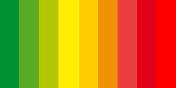

Sustainappility
Sustainappility

Über uns:
Hallo! Wir sind die Sustainappility gGmbh. Wir haben es uns zur Aufgabe gemacht, dir den Weg zu einer bewussteren Lebensführung zu ebnen. Mithilfe unserer neuartigen App erhälst du die Möglichkeit, nachhaltige Entscheidungen zu treffen. Denn: "Das materialistische Konsumverhalten, das uns die Werbung einbläut, ist sehr schwer zu bekämpfen. Es ist wichtig, Alternativen dazu aufzuzeigen und zu fördern. " (Ellen Almers von der School of Education and Communication der Universität Jönköping, Schweden, 2009)
Was kann die App und wie funktioniert die App?
Hast du schon mal überlegt, nachhaltiger zu leben? Im Supermarkt das nachhaltigere Produkt zu kaufen? Dann bist du hier richtig. Denn mit unserer App findest du heraus welches das nachhaltigste Produkt ist. Und das ohne viel Aufwand oder Stress und das Ganze kostenlos. Die Funktionsweise der App ist denkbar einfach. Mithilfe der Handykamera scannt man den Barcode des gewünschten Produktes ein, sodass die App dieses erkennt und die zugehörigen Daten abrufen kann. Die Eingabe des Produktes kann jedoch auch manuell erfolgen. Die App gibt nun eine Bewertung der Nachhaltigkeit des Produktes mithilfe einer Farbskala ab. Diese Skala reicht von einem dunklen Grün für sehr nachhaltige Produkte über gelb und orange bis zu einem dunklen Rotton für Produkte, die alles andere als nachhaltig produziert bzw. transportiert werden. Hierbei hast du aber auch die Möglichkeit, die Begründung hinter der Einstufung einzusehen und die konkreten Einzelaspekte zu betrachten, indem man auf ein Fragezeichensymbol klickt, welches bei der Bewertung erscheint. Zudem kann man die Bewertung individuell auf sich abzustimmen, indem man die Gewichtung der einzelnen Kriterien wie CO2-Fußabdruck oder Verpackung im Hauptmenü ändert, um persönlich priorisierte Aspekte stärker hervorzuheben. Da ständig neue Produkte auf den Markt kommen und unsere App bereits bei der Einführung nicht sämtliche auf dem Markt erhältliche Waren erfassen kann, wird sie stetig aktualisiert und erweitert.
Wie funktioniert die Bewertung?
Bewertet wird mithilfe einer Farbskala.Wenn das Produkt sehr gut abschneidet, liegt die Bewertung im grünen Bereich. Weniger nachhaltige Produkte befinden sich weiter rechts auf der Skala. Unter der Bewertung findet man noch Näheres über das Produkt und anhand welcher Kriterien es bewertet wurde. Hierbei wird nach ökologischen Kriterien wie Herstellung, Inhaltsstoffen, Transport und Verpackung bewertet anhand von Faktoren wie Wasser und CO2 Fußabdruck oder Verpackungsmüll. Gegebenenfalls wird dir auch eine nachhaltigere Alternative geboten, damit du auf nichts verzichten musst und dem Planeten trotzdem etwas Gutes tun kannst.
